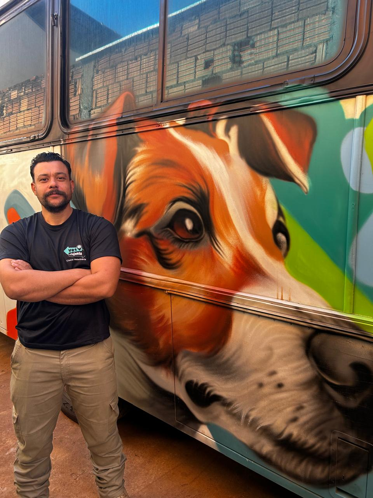
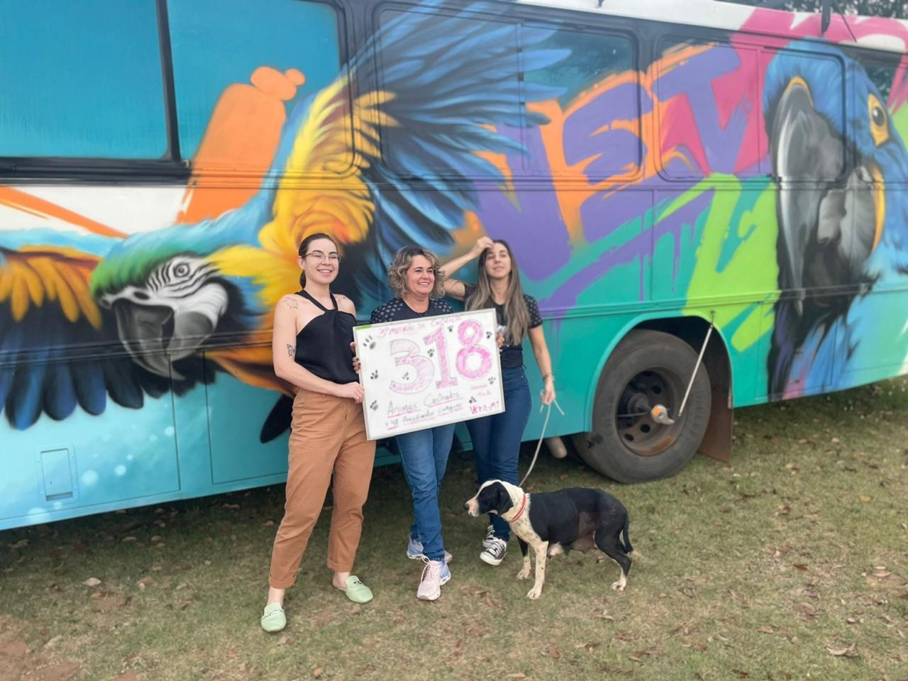
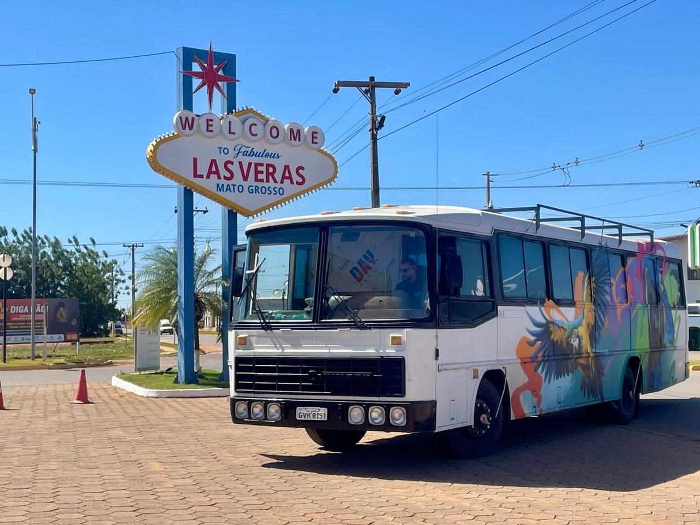
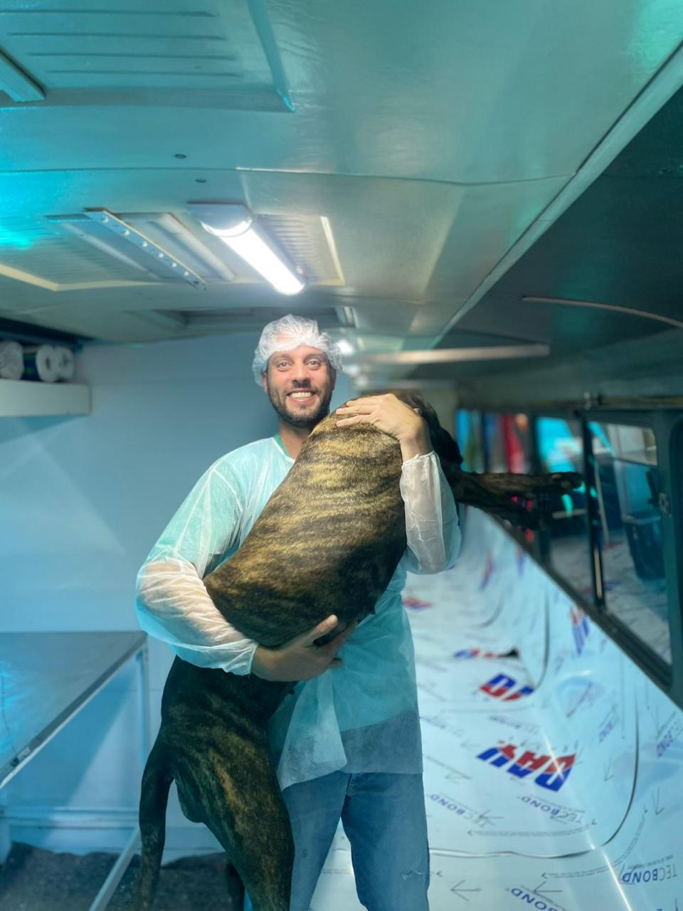
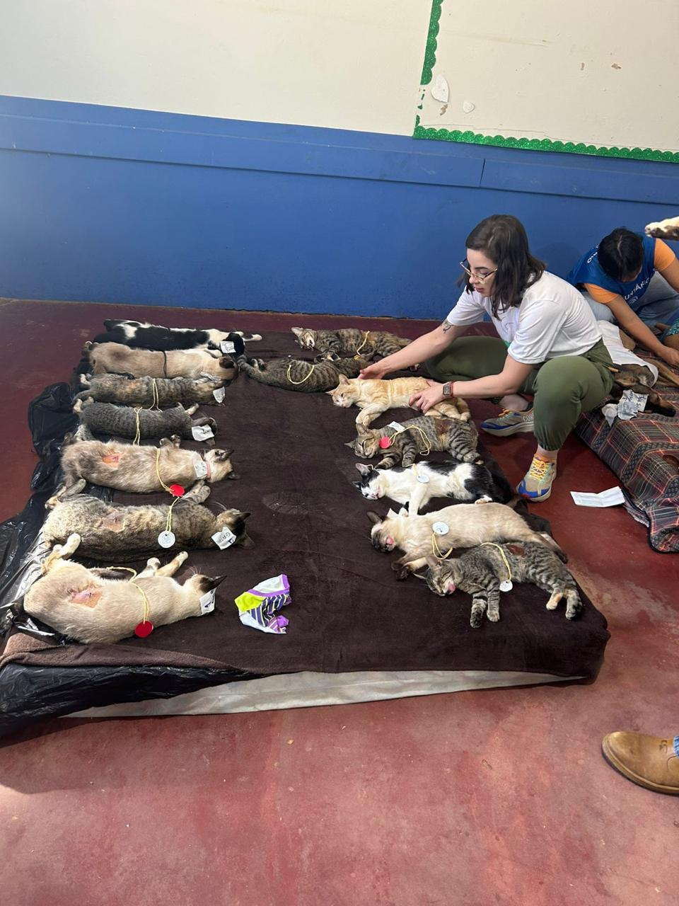
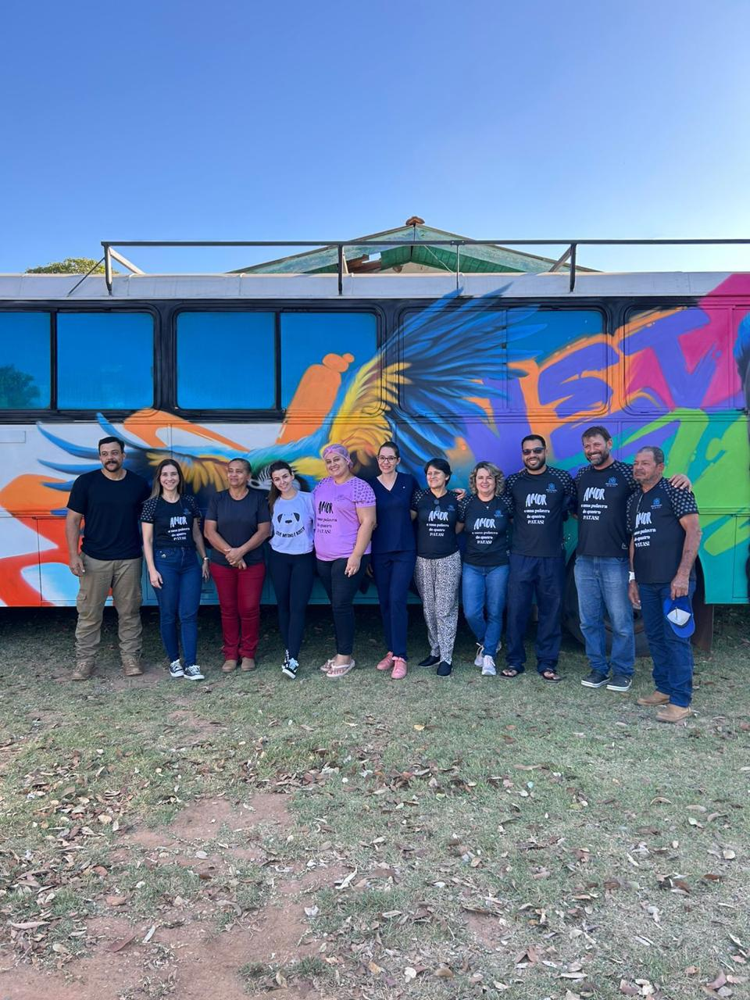

O Castramóvel da Vet Viajante leva cirurgia segura e equipe especializada diretamente à sua comunidade — sem deslocamento, sem burocracia, com todo o rigor do CRMV-MG.
Projetado para operar em qualquer município, o Castramóvel da Vet Viajante atende rigorosamente às normas do CRMV-MG, garantindo ambiente cirúrgico estéril, seguro e totalmente equipado — independente da infraestrutura local.
Cada operação conta com equipe de 2 veterinários cirurgiões e 3 auxiliares treinados, seguindo o mesmo protocolo de biossegurança da nossa clínica fixa.
Equipado e homologado conforme a Resolução CFMV nº 1.236/2019 para clínicas veterinárias itinerantes.
As inscrições são gratuitas e realizadas via WhatsApp. Vagas limitadas por evento.
Acompanhe para onde o Castramóvel vai nos próximos meses. Novas datas são anunciadas com 30 dias de antecedência.
Cada número representa uma família que confia, um animal que vai viver melhor e uma comunidade que muda.
Cães e gatos atendidos desde 2023, com controle rigoroso de cada procedimento
Cidades no Vale do Aço e Região Metropolitana de BH já receberam o Castramóvel
Protocolo rigoroso com anestesia monitorada garante segurança em campo aberto
Eventos em comunidades, parceria com prefeituras e ações privadas de responsabilidade social
Imagens reais das nossas ações em campo. Equipe dedicada, ambiente controlado, resultados concretos.






A Vet Viajante está habilitada para participar de licitações e estabelecer parcerias público-privadas voltadas ao controle populacional ético de cães e gatos. Nossa atuação está alinhada às diretrizes do Ministério da Saúde para zoonoses.
CNPJ ativo, CRMV-MG em dia e documentação completa para participar de processos licitatórios municipais e estaduais.
Entregamos laudo técnico detalhado com número de procedimentos, espécies, sexo e localização geográfica de cada animal atendido.
Atuamos em regime de parceria com secretarias de saúde, meio ambiente e assistência social, com possibilidade de cofinanciamento.
Adaptamos o calendário de itinerário conforme a demanda e prioridade do município parceiro, com aviso prévio de 60 dias.
Seja tutor, ONG ou gestor público — fale com a gente. Avaliamos cada caso com atenção e transparência.